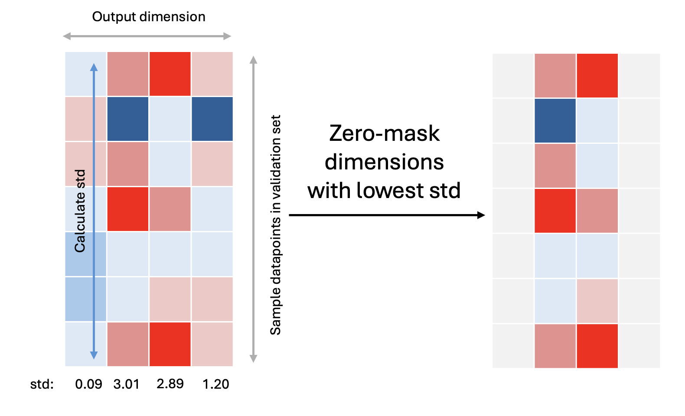

SymTorch Toolkit: Pruning
For interpretability purposes, it is good to reduce the dimensionality of deep learning models. High-dimensional representations often entangle multiple features, making it difficult to extract clear, human-understandable relationships. By encouraging a sparse representation, we encourage the network to compress information into a smaller set of meaningful components. This may also make symbolic regression possible on these models.
The SymTorch pruning class allows you to dynamically reduce the output dimensionality of MLPs by zero-masking the unimportant dimensions.
Important dimensions: The dimensions that the model uses the most in predicting the output. These would vary most with differences in the input. Hence we choose the important dimensions as the ones with the highest standard deviation across the datapoints.
We pass some input data through the model (usually a subset of the validation set) and analyse the outputs of the MLP. We choose the output dimensions that have the highest standard deviation across the datapoints, as shown below.
Wrapping a PyTorch model
Create a simple PyTorch model.
import torch
import numpy as np
import torch.nn as nn
class MLP(nn.Module):
"""
Simple MLP.
"""
def __init__(self, input_dim, output_dim, hidden_dim):
super(MLP, self).__init__()
self.mlp = nn.Sequential(
nn.Linear(input_dim, hidden_dim),
nn.ReLU(),
nn.Dropout(0.2),
nn.Linear(hidden_dim, hidden_dim),
nn.ReLU(),
nn.Dropout(0.2),
nn.Linear(hidden_dim, hidden_dim),
nn.ReLU(),
nn.Dropout(0.2),
nn.Linear(hidden_dim, output_dim)
)
def forward(self, x):
return self.mlp(x)
class SimpleModel(nn.Module):
"""
Model with MLP f_net and linear g_net.
"""
def __init__(self, input_dim, output_dim, output_dim_f=32, hidden_dim=128):
super(SimpleModel, self).__init__()
self.f_net = MLP(input_dim, output_dim_f, hidden_dim)
# g is linear - only learns to combine the 2 pruned outputs from f
self.g_net = nn.Linear(output_dim_f, output_dim) # Will use first 2 dims of f after pruning
def forward(self, x):
x = self.f_net(x)
x = self.g_net(x)
return x
Train the model on some data. We have a composite function \(y=g(f(\mathbf{x}))\).
and \(g\) is just a linear transformation of \(f_0\) and \(f_1\) $\( g(\mathbf{f}) = 2.5f_0 -1.3f_1 \)$
import numpy as np
# Make the dataset
x = np.array([np.random.uniform(0, 1, 10_000) for _ in range(5)]).T
def f_func(x):
f0 = x[:, 0]**2
f1 = np.sin(x[:, 4])
return np.stack([f0, f1], axis=1)
def g_func(f_output):
a, b = 2.5, -1.3
return a * f_output[:, 0] + b * f_output[:, 1]
# Generate ground truth data
f_true = f_func(x)
y = g_func(f_true)
noise = np.array([np.random.normal(0, 0.05*np.std(y)) for _ in range(len(y))])
y = y + noise
We need to set up the pruning model.
from symtorch.toolkit import Pruning_MLP
# Create model with pruning for f, linear g_net
model = SimpleModel(input_dim=x.shape[1], output_dim=1, output_dim_f=32)
model.f_net = Pruning_MLP(model.f_net,
initial_dim=32, # Initial dimensionality of the MLP
target_dim=2, # Target dimensionality - final output dim after pruning
mlp_name="f_net")
Training our model and dynamically reducing dimensionality
# Set up the pruning schedule
epochs = 100
model.f_net.set_schedule(total_epochs=epochs,
end_epoch_frac=0.7 # End pruning after 70% of epochs
)
# Set up training
import torch.optim as optim
from torch.utils.data import DataLoader, TensorDataset
from sklearn.model_selection import train_test_split
def train_model(model, dataloader, X_val, opt, criterion, epochs=100):
"""
Train model with MLP f (with pruning) and linear g_net.
Args:
model: PyTorch model to train
dataloader: DataLoader for training data
X_val, y_val: Validation data for pruning
opt: Optimizer
criterion: Loss function
epochs: Number of training epochs
Returns:
tuple: (trained_model, loss_tracker, active_dims_tracker)
"""
loss_tracker = []
active_dims_tracker = []
for epoch in range(epochs):
epoch_loss = 0.0
for batch_x, batch_y in dataloader:
# Forward pass
pred = model(batch_x)
loss = criterion(pred, batch_y)
# Backward pass
opt.zero_grad()
loss.backward()
opt.step()
epoch_loss += loss.item()
loss_tracker.append(epoch_loss)
active_dims_tracker.append(model.f_net.pruning_mask.sum().item())
model.f_net.prune(epoch, X_val) # Pass in the validation set (or a subset of) to the model
if (epoch + 1) % 10 == 0:
avg_loss = epoch_loss / len(dataloader)
active_dims = model.f_net.pruning_mask.sum().item()
print(f'Epoch [{epoch+1}/{epochs}], Avg Loss: {avg_loss:.6f}, Active dims: {active_dims}')
return model, loss_tracker, active_dims_tracker
# Set up training
criterion = nn.MSELoss()
opt = optim.Adam(model.parameters(), lr=0.001)
# Split data
X_train, X_val, y_train, y_val = train_test_split(
x, y.reshape(-1,1), test_size=0.1, random_state=290402)
# Set up dataset - only x as input now
dataset = TensorDataset(torch.FloatTensor(X_train), torch.FloatTensor(y_train))
dataloader = DataLoader(dataset, batch_size=32, shuffle=True)
# Train the model and save the weights
print("Starting training...")
model, losses, active_dims = train_model(model, dataloader, torch.FloatTensor(X_val), opt, criterion, 100)
print("Training completed!")
torch.save(model.state_dict(), 'model_weights.pth')
Starting training...
Epoch [10/100], Avg Loss: 0.014917, Active dims: 30
Epoch [20/100], Avg Loss: 0.011608, Active dims: 26
Epoch [30/100], Avg Loss: 0.009897, Active dims: 20
Epoch [40/100], Avg Loss: 0.009762, Active dims: 14
Epoch [50/100], Avg Loss: 0.009537, Active dims: 8
Epoch [60/100], Avg Loss: 0.008782, Active dims: 3
Epoch [70/100], Avg Loss: 0.008280, Active dims: 2
Epoch [80/100], Avg Loss: 0.008194, Active dims: 2
Epoch [90/100], Avg Loss: 0.007955, Active dims: 2
Epoch [100/100], Avg Loss: 0.007329, Active dims: 2
Training completed!
Let’s see how the number of active dimensions decrease as training progesses.
import matplotlib.pyplot as plt
plt.plot(active_dims)
plt.xlabel('Epochs')
plt.ylabel('Number of active dimensions for the f MLP output')
plt.show()
You can pass a decay_rate parameter into the .set_schedule method of a Pruning_MLP. The default is a cosine decay (as shown above). The other options are exp and linear.
Interpret the MLP
The .interpret function only takes into account the active (non-masked) dimensions.
print("\nRunning symbolic regression on pruned f...")
model.f_net.interpret(torch.FloatTensor(X_train),
niterations=100,
verbosity = 0,
complexity_of_operators={"sin":3, "exp":3},
constraints={"sin": 3, "exp":3},
complexity_of_constants=2,
parsimony=0.1)
Running symbolic regression on pruned f...
🛠️ Running SR on active dimension 11 (1/2)
/Users/liz/PhD/SymTorch_project/symtorch_venv/lib/python3.11/site-packages/pysr/sr.py:2811: UserWarning: Note: it looks like you are running in Jupyter. The progress bar will be turned off.
warnings.warn(
💡Best equation for active dimension 11: ((sin(x4) * -4.0603356) + -0.4592915) + ((x0 * 7.924281) * x0)
🛠️ Running SR on active dimension 30 (2/2)
/Users/liz/PhD/SymTorch_project/symtorch_venv/lib/python3.11/site-packages/pysr/sr.py:2811: UserWarning: Note: it looks like you are running in Jupyter. The progress bar will be turned off.
warnings.warn(
💡Best equation for active dimension 30: ((sin(x4) * -4.253878) + -0.47904623) + ((x0 * 8.191602) * x0)
❤️ SR on f_net active dimensions complete.
{11: PySRRegressor.equations_ = [
pick score equation \
0 0.000000 x0
1 0.060504 x0 + x0
2 0.012885 x0 * 2.4303756
3 0.099476 (x0 + x0) * x0
4 0.251562 inv(inv(x0) + -0.83665174)
5 0.893290 (x0 + -0.46222934) * 7.921155
6 0.223472 (x4 * -5.1028423) + (x0 * 6.3036585)
7 1.203393 (x0 * (x0 * 7.5073485)) + (x4 * -4.141273)
8 0.202045 (x4 * -4.281107) + (((x4 + 7.1182756) * x0) * x0)
9 1.395236 ((x0 * (x0 * 7.9227934)) + -0.5894524) + (x4 *...
10 >>>> 0.192849 ((sin(x4) * -4.0603356) + -0.4592915) + ((x0 *...
11 0.002112 ((((x0 * 7.835847) + 0.09281631) * x0) + (sin(...
12 0.002932 (x0 * (x0 * ((x4 * 0.10984373) + 7.8695107))) ...
13 0.006167 ((x0 * (((x0 + x0) * -0.13601798) + 8.17911)) ...
14 0.001548 (sin(x4) * -4.0556655) + ((((((sin(x0) + -0.57...
loss complexity
0 5.428722 1
1 4.809997 3
2 4.748418 4
3 4.298799 5
4 3.342684 6
5 1.368184 7
6 0.875062 9
7 0.078847 11
8 0.052637 13
9 0.013042 14
10 0.007313 17
11 0.007267 20
12 0.007224 22
13 0.007136 24
14 0.007070 30
],
30: PySRRegressor.equations_ = [
pick score equation \
0 0.000000 x0
1 0.058238 x0 + x0
2 0.014227 x0 * 2.4712734
3 0.091449 (x0 + x0) * x0
4 0.250775 inv(inv(x0) + -0.84148186)
5 0.915017 (x0 * 8.207496) + -3.8249905
6 0.234240 ((x4 * -0.81828034) + x0) * 6.522621
7 1.182880 (x4 * -4.3366895) + ((x0 * x0) * 7.7566714)
8 0.302618 ((x0 * x0) * 7.87612) + ((x4 + -5.1502504) * x4)
9 1.171825 ((x4 * -3.6367) + -0.6148395) + ((x0 * x0) * 8...
10 >>>> 0.162081 ((sin(x4) * -4.253878) + -0.47904623) + ((x0 *...
11 0.033237 ((sin(x4) * -4.2536726) + (x0 * ((x0 * 7.81192...
12 0.015804 (sin(x4) * -4.461439) + ((x0 * ((x0 * 8.020732...
loss complexity
0 5.875321 1
1 5.229334 3
2 5.155465 4
3 4.704918 5
4 3.661356 6
5 1.466409 7
6 0.917903 9
7 0.086171 11
8 0.047045 13
9 0.014574 14
10 0.008962 17
11 0.008112 20
12 0.007859 22
]}
You can see that the outputs of the f_net NN are linear combinations of the f function.
We can even perform SR on the g_net to show that this layer is just a linear transformation of the inputs.
from symtorch.mlp_sr import MLP_SR
model.g_net = MLP_SR(model.g_net, mlp_name='g_net')
model.g_net.interpret(torch.FloatTensor(X_train),
parent_model=model,
verbosity = 0,
niterations=100,
complexity_of_operators={"sin":3, "exp":3},
constraints={"sin": 3, "exp":3},
complexity_of_constants=2,
parsimony=0.1)
🛠️ Running SR on output dimension 0 of 0
/Users/liz/PhD/SymTorch_project/symtorch_venv/lib/python3.11/site-packages/pysr/sr.py:2811: UserWarning: Note: it looks like you are running in Jupyter. The progress bar will be turned off.
warnings.warn(
💡Best equation for output 0 found to be (x30 * 0.1593529) + ((x11 * 0.14723374) + 0.13027407).
❤️ SR on g_net complete.
{0: PySRRegressor.equations_ = [
pick score equation \
0 0.000000 x15
1 0.069353 0.21549018
2 1.863556 x11 * 0.31768548
3 0.122595 (x30 * -0.65978885) + x11
4 5.711863 0.13471259 + (x30 * 0.301455)
5 3.172880 ((x30 + x11) * 0.1534004) + 0.13008839
6 >>>> 5.856868 (x30 * 0.1593529) + ((x11 * 0.14723374) + 0.13...
loss complexity
0 6.930116e-01 1
1 6.465779e-01 2
2 1.555812e-02 4
3 1.217511e-02 6
4 4.025709e-05 7
5 7.061770e-08 9
6 1.652331e-15 12
]}
The variables used in this NN are just the active dimensions of the f_net NN.
Switch to Using the Equation Instead in the Forwards Pass
model.f_net.switch_to_equation()
✅ Successfully switched f_net to symbolic equations for 2 active dimensions:
Dimension 11: ((sin(x4) * -4.0603356) + -0.4592915) + ((x0 * 7.924281) * x0)
Variables: ['x0', 'x4']
Dimension 30: ((sin(x4) * -4.253878) + -0.47904623) + ((x0 * 8.191602) * x0)
Variables: ['x0', 'x4']
🎯 Active dimensions [11, 30] now using symbolic equations.
🔒 Inactive dimensions will output zeros.
model.g_net.switch_to_equation()
✅ Successfully switched g_net to symbolic equations for all 1 dimensions:
Dimension 0: (x30 * 0.1593529) + ((x11 * 0.14723374) + 0.13027407)
Variables: ['x11', 'x30']
🎯 All 1 output dimensions now using symbolic equations.
Now when running the forwards pass through the model, it uses the symbolic equation instead of the MLP.
interpretable_outputs = model(torch.tensor(X_train, dtype=torch.float32))
interpretable_outputs
tensor([[-0.0448],
[ 1.0667],
[ 0.9758],
...,
[ 1.0348],
[ 1.1453],
[-0.4258]])
Switch to Using the MLP in the Forwards Pass
model.f_net.switch_to_mlp()
model.g_net.switch_to_mlp()
✅ Switched f_net back to MLP
✅ Switched g_net back to MLP
True
model.eval()
with torch.no_grad():
model_outputs = model(torch.tensor(X_train, dtype=torch.float32))
model_outputs
tensor([[-0.0496],
[ 1.0791],
[ 0.9897],
...,
[ 1.0486],
[ 1.1706],
[-0.4119]])
# Clean up
import os
import shutil
if os.path.exists('SR_output'):
shutil.rmtree('SR_output')
os.remove('model_weights.pth')